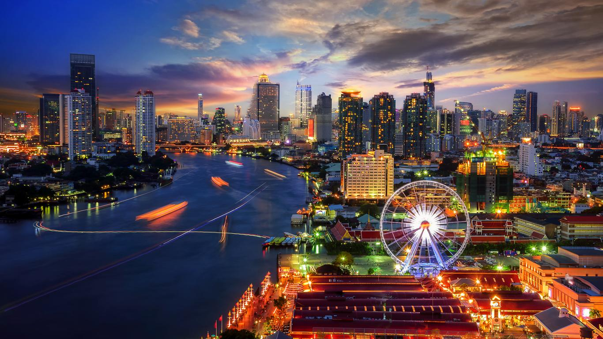

WELCOME TO OUR TRAVEL VLOG
Travel is the movement of people between distant geographical locations.Explore the world with us and discover destinations.
YOUR DESTINATION
DUBAI
click for more about this

The United Arab Emirates is one of the richest places on Earth in terms of tourism experiences.
MALDIVES
click for more about this

The Maldives are an island-hopper’s dream. Below the water, there’s miles of coral reef that are home to thousands of species of marine life and underwater treasures.
BANGKOK
click for more about this

Bangkok is a cosmopolitan city offering the best of both Thai and international cuisine. Top local dishes include Laab Mu, a minced pork salad, and Ko Mu Yang, grilled pork neck.